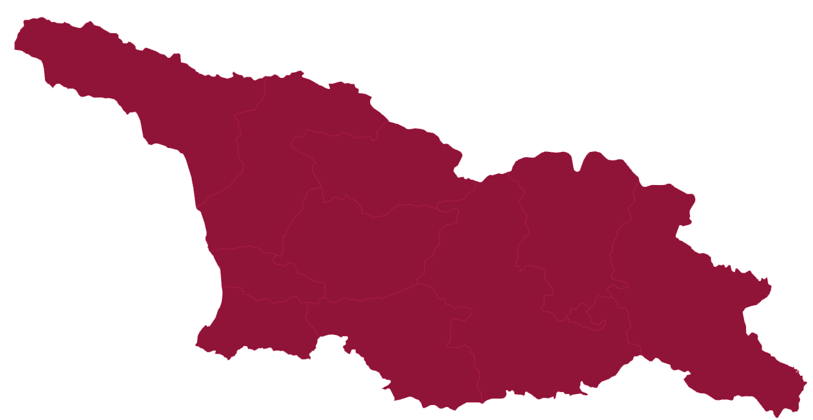

საქართველოში ეს უარყოფითი ტენდენცია ბოლო თხუთმეტი წლის განმავლობაში პირველად 202O წელს დაფიქსირდა და დღემდე გრძელდება. რაც იმას ნიშნავს, რომ პანდემიის პერიოდიდან, რომელიც 2020 წელს დაიწყო დღემდე, საქართველოს მოსახლეობა მატებაში არ წასულა, ამ პერიოდში განსაკუთრებით ცუდი მდგომარებობა იყო 2021 წელს (-13 960), რაც სავარაუდოდ კორონა ვირუსის შედეგია.
განსაკუთრებით ცუდი მდგომარეობაა იმერეთში, სადაც მთლიანად ბოლო 4 წლის განმავლობაში ბუნებრივი მატების უარყოფითი მაჩვენებელი -11 995-მდე გაიზარდა.
...
წყარო: სტატისტიკის ეროვნული სამსახური
ავტორი: თამუნა ჩინჩალაძე